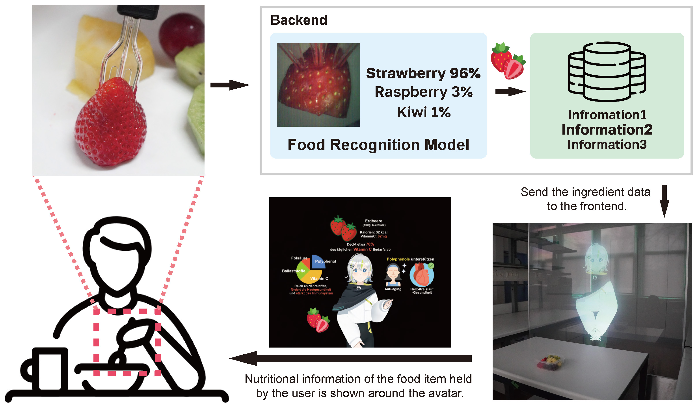
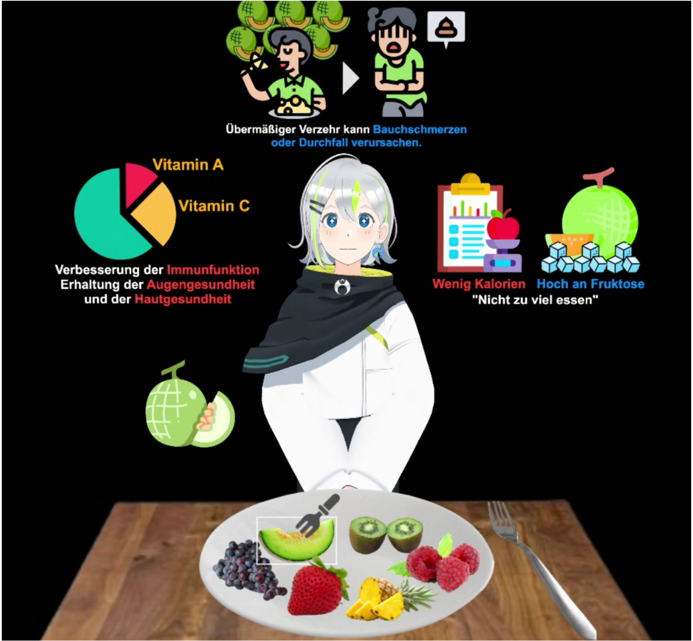

ARCADE
Persuasive Technology / Human-Food Interaction / Dialogue System
This research presents a multimodal conversational system for dietary education during solitary eating, integrating voice guidance, visual information, and agent non-verbal behaviors. The our system uses a utensil-mounted camera for real-time food recognition and ARCADE, a spatial augmented reality display to enable natural interaction with an avatar. Two experiments with Japanese (n=35) and German (n=35) participants were conducted to evaluate the system. Experiment 1 compared three presentation modalities via a web implementation, showing multimodal presentation enhanced educational effectiveness and satisfaction. Experiment 2 with the real, physical system achieved higher ratings, with users resistant to conventional voice assistants showing particularly high satisfaction. Cultural differences emerged in valued aspects - Japanese users preferred emotional engagement, Germans focused on information quality - yet both groups favored the multimodal approach. The findings demonstrate that multimodal integration effectively addresses solitary eating issues while promoting healthier dietary behaviors.




- ARCADE: An Augmented Reality Display Environment for Multimodal Interaction with Conversational Agents
- Design of a Spoken Dialogue System to Provide Food Knowledge to Users while Eating